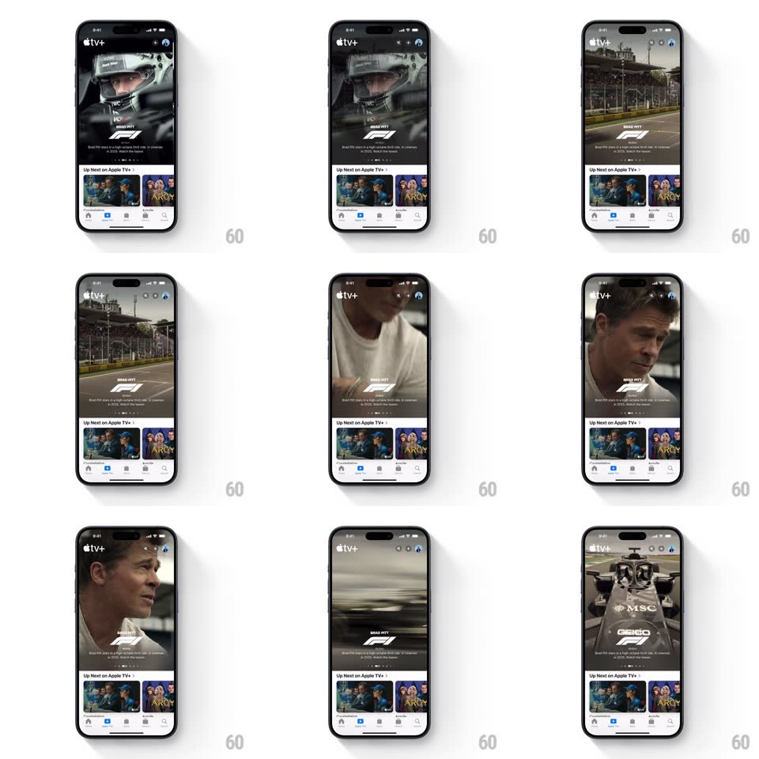

Media
Frame-by-frame

Rebuild this interaction 1:1: Apple TV+'s featured carousel - a poster card that expands into an auto-playing video preview with the title treatment overlaying the footage.

Rebuild this interaction 1:1: Apple TV+'s featured carousel - a poster card that expands into an auto-playing video preview with the title treatment overlaying the footage. ## Integration Integration: stack-agnostic spec - springs given as stiffness/damping, timed motions as duration + curve; map every value to your framework and animation library of choice. ## Scene The TV+ home tab: a full-bleed featured card at top (poster art with title logo and synopsis), an "Up Next" rail below. The featured card begins as key art, then crossfades into a muted auto-playing trailer that fills the card, the title logo persisting over the video. Swiping slides to the next featured title. ## Motion spec Pattern: poster-to-video ambient preview. - After ~1s at rest, the poster crossfades into the playing preview (600ms, ease-in-out); the video starts mid-clip, muted, letterboxed to the card's aspect. - The title logo and synopsis fade down to a smaller persistent lockup over the video's lower third (300ms) as playback starts. - Swipe horizontally: the card carousel paginates 1:1 with the finger, neighboring cards peeking in from the edge; release snaps to the nearest card (spring ~320/24); the outgoing video pauses and fades back to its poster (300ms) as the new card's poster-to-video cycle begins. - Paging dots under the card track the position (active dot stretches 6px to 16px, 200ms). - The "Up Next" rail and tab bar stay fixed; only the hero region moves. - Scrolling the page down collapses the hero height slightly (parallax, video keeps playing until 50% off-screen, then pauses to poster). ## Calibration - Video starts muted always; a speaker toggle fades in over the top-right during playback. - Poster-to-video crossfade hides the seek to middle - no black first frame ever shows. ## Reduced motion Static posters; no auto-play, dots update on swipe only. ## Don't miss - The title treatment is rendered artwork over the video, not live text - keep it pinned during the crossfade. - Card corners stay rounded (~16px) even while the video plays.